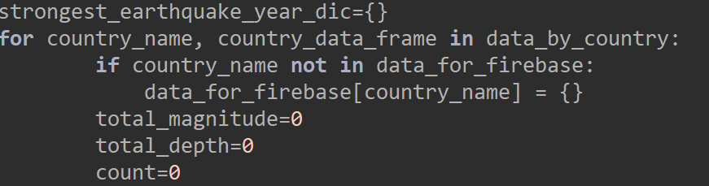

One of the problems that I faced with was calculating the strongest earthquake. There is two code for this. The first code which didn’t worked was in `analysed graph data`. I tried to get the strongest earthquake magnitude and country in that year. What I did was I created a function called strongest_earthquake that takes in country and info about earthquakes from data file and a dictionary called strongest_earthquake_year_dic. The for loop goes through each year and its corresponding earthquake data. For each year, it checks if that year already exists in the strongest_earthquake_year_dic dictionary. If it exists it compares the current earthquake's magnitude to the stored one. if it is not it adds the year to the dictionary with the magnitude. After processing all the years for a country, it prints the country and the magnitude of its most recent earthquake to see if the information is correct.
Although it didn’t worked. Then I did it on my cleaning file and it worked better. For this code I created fbDict to store earthquake data for each group. The loop goes through each “groupname” and its “groupDataFrame”. “r” is likely an iterable of groups and their data. If the group hasn't been processed before, it initializes an empty dictionary for that group in fbDict. Total_magnitude, total_depth and count is to track the numbers of those groups. The second loop goes through each row in the groupDataFrame. If the earthquake's date is not already in fbDict for that group, it creates an entry with default values for magnitude, depth, and count. Then it adds the earthquake's magnitude and depth to the total for that date and increases the value of count by one. Then it sends it to the firebase.
I got information from clean csv file and did graphs for average magnitude and average depth. By creating a dictionary called `average magnitude`, I calculated it in a function and for loop. I created a function called average magnitude(c, i). This function calculates the average magnitude of earthquakes for a given country (c) and its earthquake data (i). inside the for loop for each year in the country's earthquake data it calculates the average magnitude for that year by dividing the magnitude by the count of earthquakes for that year. This average magnitude is then added to the total sum and count is increased by one.
Then I created average_depth_dic. Average depth(c, i)calculates the average depth of earthquakes for a given country (c) and its earthquake data (i). Then, for each year in the data for that country, It calculates the average depth for that year by dividing the total depth of earthquakes by the number of earthquakes for that year. After running the loop, average_depth_dic will contain the average depths of earthquakes for each country, organized by year. Then it prints the average depth data for the country "AR”.
Later on I did the graphs for average magnitude and average depth. Counts retrieves the values from the average_depth_dic dictionary for a specific country. Then it gets all the values from the dictionary related to that country and converts them into a list. With matplotlib I created the bar chart and give it a title. At the end I displayed the bar using plt.show().
I did basically the same thing for average magnitude. Counts retrieves the values from the average_magnitude_dic dictionary for a specific country and converts all the values into a list. With matplotlib I created the bar chart, give it a title and I displayed the bar using plt.show().
I started on recommendations that will be on my website. The first one was experienced_earthquakes. For that I did a function and wrote a for loop so it will count the experienced earthquakes in each country.
The second one was strongest_earthquake. There is two code for this. The first code which didn’t worked was in `analysed graph data`. I tried to get the strongest earthquake magnitude and country in that year. Although it didn’t worked. Then I did it on my cleaning file so the magnitudes will reset. The second one worked better so I send both recommendations to firebase. I also sent average magnitude and average depth calculations on firebase too. After I did my graphs in python I skipped to JavaScript. I did my graphs on JavaScript too and started to design my website with JS, HTML and CSS on Visual Studio Code.